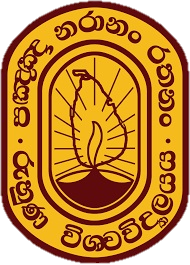
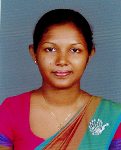

 Faculty of Technology University of Ruhuna
Ms.Gayani Chathurika Pathiraja

Department of Engineering Technology
Lecturer (Probationary)
gayani@etec.ruh.ac.lk
94-41-2222681 Ext.4508


ACADEMIC AND PROFESSIONAL QUALIFICATIONS
M.Phil. (Peradeniya, SL)
B.Tech. (Special in Material Science and Technology) (Uva Wellassa, SL), 2012
Lecturer (probationary) at Department of Engineering Technology, Faculty of Technology, University of Ruhuna, Sri Lanka from 1st of June 2016 to present
Scientific Officer at National Science Foundation, Sri Lanka from 29th June 2015 to 24th May 2016
Research Assistant of Dr. Nanayakkara's Environmental Engineering Research group at Department of Civil Engineering, Faculty of Engineering, University of Peradeniya, Sri Lanka from May, 2014 to June 2015
Research Assistant of Electrochemistry/ Environmental Engineering group at Institute of Fundamental Studies, Kandy, Sri Lanka from October, 2011 to April, 2014
PUBLICATIONS
Gayani Chathurika Pathiraja, Athula Wijayasinghe, Nadeeshani Nanayakkara (2016). Oxygen evolution reaction of Ti/IrO2-SnO2 electrode: A study by cyclic voltammetry, Tafel lines, EIS and SEM, Bulletin of Materials Science, 39(3), 803-809
Chandima Weerakkody, Gayani Chathurika Pathiraja, Parakrama Karunarathne, Nadeeshani Nanayakkara (2015). Development of corrosion resistant composite coating with copper and zirconium, Ceylon Journal of Science- Physical Sciences, 19, 17-21
Gayani Chathurika Pathiraja, Pavithra Bhakthi Jayathilaka, Chandima Weerakkody, Parakrama Karunarathne, Nadeeshani Nanayakkara (2014). Comparison study of dimensionally stable anodes for degradation of chlorpyrifos in water, Current science, 107(2), 219-226
Jayathilaka, P.B., Pathiraja, G.C., Bandara, A., Subasinghe, N.D., Nanayakkara, N. (2014). An electrochemical mechanisms study: On Steel/IrO2-Sb2O3 electrodes for oxidation of phenol in water, Canadian Journal of Chemistry, 93(5), 536-541
Pavithra Bhakthi Jayathilaka, Gayani Chathurika Pathiraja, Athula Bandara, Nalaka Deepal Subasinghe, Nadeeshani Nanayakkara (2014) Theoretical study of phenol and hydroxyl radical reaction mechanism in aqueous medium by DFT/ B3LYP/ 6-31+G (d,p)/ CPCM model, Canadian Journal of Chemistry, 92(9), 809-813
Gayani Chathurika Pathiraja, Dilini Kumari De Silva, Lasangi Dhanapala, Nadeeshani Nanayakkara (2014). Investigating the surface characteristics of chemically modified and unmodified rice husk ash; bottom-up approach for adsorptive removal of water contaminants, Desalination and Water Treatment, 54(2), 547-556
P.B. Jayathilaka, G.C. Pathiraja, N.D. Subasinghe, A. Bandara, Nadeeshani Nanayakkara, Optimization of Ti/IrO2-Sb2O3 anode material content by using Response Surface Method, 3rd Water Research Conference 2015, China, 11-14 January 2015
Gayani Chathurika Pathiraja, Dilini Kumari De Silva, Nadeeshani Nanayakkara, (2014) Surface modification of rice husk ash for enhancing copper adsorption, 5th International Conference on Sustainable Built Environment, Earl?s Regency Hotel, Kandy, Sri Lanka, 10th and 11th December 2014
P.B. Jayathilaka, G.C. Pathiraja, N.D. Subasinghe, A. Bandara, Nadeeshani Nanayakkara (2014) Novel anode with low energy consumption for polluted water treatment, Driving Research Towards Economy "Opportunities and Challenges", 2nd International conference, 13th -14th November 2014
G.C. Pathiraja, P.B. Jayathilaka, A. Wijayasinghe, P. Karunarathne, N. Nanayakkara (2014). Optimization of anode materials for electrochemical degradation of chlorpyrifos in water, PGIS Research Congress-2014 Postgraduate Institute of Science, University of Peradeniya, Sri Lanka, 10th - 11th October 2014
P.B. Jayathilaka, G.C. Pathiraja, N.D. Subasinghe, A. Bandara, Nadeeshani Nanayakkara (2014).Steel/IrO2 novel anode material for the treatment of phenol contaminated water, PGIS Research Congress-2014 Postgraduate Institute of Science, University of Peradeniya, Sri Lanka, 10th - 11th October 2014
Gayani Chathurika Pathiraja, Pavithra Bhakthi Jayathilaka, Kumudu Karunarathna, Nadeeshani Nanayakkara (2014). Electrochemical properties and degradation of chlorpyrifos on different DSA electrodes, Third International Symposium on Water quality and human health: challenges ahead, Postgraduate Institute of Science, University of Peradeniya, Sri Lanka, 27th -28th June 2014
P.B. Jayathilaka, G.C. Pathiraja, N.D. Subasinghe, A. Bandara, Nadeeshani Nanayakkara (2014). Oxidation methods of water management and treatment, Third International Symposium on Water quality and human health: challenges ahead, Postgraduate Institute of Science, University of Peradeniya, Sri Lanka, 27th - 28th June 2014
Pavithra Bhakthi Jayathilaka, Gayani Chathurika Pathiraja, Nadeeshani Nanayakkara (2013). Electrochemical oxidation of phenol in wastewater, 69th Annual Session of the Sri Lanka Association of the Advancement of Science, Sri Lanka
Gayani Chathurika Pathiraja, Pavithra Bhakthi Jayathilaka, Nadeeshani Nanayakkara (2013). Preparation and characterization of dimensionally stable anode for degradation of chlorpyrifos in water, Sustainable Development Conference 2013, Thailand, ISBN 978-86-87043-17-6, 21st - 23rd June 2013
P.B. Jayathilaka, G.C. Pathiraja, D. Subasingha, A. Bandara, N.Nanayakkara (2013). Electrochemical oxidation techniques for urban water management, 4th International Conference on Structural Engineering and Construction Management Urban Water Environment: Monitoring and Management, Earl's Regency Hotel, Kandy, Sri Lanka, 15th of December 2013
Nanayakkara, N., Jayathilake, H.A.P.P.B., Pathiraja, G.C. (2012). Importance of electrode material in electrochemical technologies for wastewater treatment and its sustainability, International conference on sustainable built environment, Earl?s Regency Hotel, Kandy, Sri Lanka, 14-16 December 2012
Jayathilaka, P.B., Pathiraja, G.C., Nanayakkara, N. (2012). Electrochemical treatment for phenol/ phenolic hazardous chemicals in water, Symposium on "The Potential Health and Environmental impacts of exposure to hazardous natural and man-made chemicals and their proper management", ISBN 978-955-0498-02-4, 22nd-23rd of November 2012, Sri Lanka
G.C. Pathiraja, K.G.N. Nanayakkara (2011). Surface modification of activated carbon to treat polluted water streams, "Towards a knowledge economy", Proceedings of the research symposium of Uva Wellassa University, Badulla, 15-16 December 2011
AWARDS & FELLOWSHIPS
PhD/M.Phil Research Fellowship -NRC grant No 11-054, titled 'Development of electrochemical technologies to remove organic and heavy metal pollutants present in pesticides": awarded by the PhD/M.Phil Training programme of the National Research Council, Sri Lanka
MEMBERSHIPS & ACTIVITIES IN PROFESSIONAL BODIES
Member of the Sri Lanka Association of the Advancement of Science (SLAAS)
Member of the Alumni Association of University of Peradeniya (AAUP)
RESEARCH INTERESTS
My current research area is developing dimensionally stable anodes for oxidation of pesticides in water, while main research interests are electrochemical techniques, electrodes, water purification, computational methods, nano materials and materials characterization